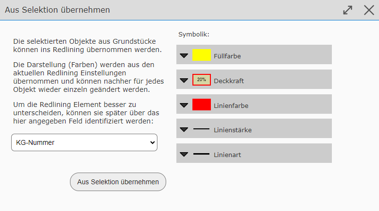

Elemente aus Selektion ins Map-Markup übernehmen¶
Je nach Berechtigung ist es möglich, die Geometrie für Map-Markup Elemente aus einer bestehenden Abfrage/Selektion zu übernehmen. Anwendungsfälle hierfür sind beispielsweise:
Selektion von mehreren Abfragen gleichzeitig darstellen, individuell einzufärben und auszudrucken
Vereinfachung beim Nachzeichnen bereits bestehender Geometrien aus einer Abfrage
Text aus abgefragten Objekten in die Karte übernehmen
Bemerkung
Ob diese Funktion zur Verfügung steht, bestimmt der Betreiber des Kartenviewers. Eventuell wird diese Funktion auch nur eingeschränkt angeboten. Beispielsweise kann beschränkt werden, wie viele Objekte übernommen werden dürfen oder ob ein Download dieser Elemente möglich ist.
Vorgehensweise¶
Damit diese Funktion angeboten wird, müssen zuerst Objekte abgefragt werden. Dies erfolgt wie im Abschnitt Suchen und Abfragen beschrieben oder mit dem Identifizieren/Auswählen Werkzeug.
Bemerkung
Die Abfrageergebnisse müssen ausgewählt in der Karte erscheinen (cyan hinterlegt). Ansonsten werden sie vom Zeichnen (Map-Markup) Werkzeug nicht erkannt. Abfrageergebnisse werden ausgewählt (selektiert), wenn in der Ergebnisliste die entsprechende Option gesetzt wurde:

Wechselt man zum Zeichnen (Map-Markup) Werkzeug, kann man diese Objekte übernehmen. Dabei ist zuerst darauf zu achten, welchen Geometrietyp (Punktförmig, Linienförmig, Flächenförmig) die ausgewählten Abfrageergebnisse aufweisen. Punkte lassen sich beispielsweise nicht als Linien oder Flächen übernehmen.
Hat man beispielsweise Grundstücksflächen ausgewählt, kann man im Zeichnen (Map-Markup) Werkzeug ebenfalls das Sub-Werkzeug Flächen auswählen. Im Werkzeug Dialog sollte jetzt folgender Button erscheinen:

Klickt man auf diesen Button erscheint folgender Dialog:
Hier kann ein Attribut aus den Abfrageergebnissen gewählt werden, dessen Werte beim Einfügen der Objekte ins Map-Markup als Beschreibung verwendet werden sollten. Das erleichtert es später, die Graphik-Elemente in der Liste zu identifizieren. Die möglichen Attributwerte sind vom Abfragethema abhängig. Bei Grundstücksflächen bietet sich dafür beispielsweise die Grundstücksnummer an.
Bemerkung
Die Darstellung (Farben, …) der eingefügten Elemente hängt von den aktuellen Darstellungsoptionen ab. Diese können zwar nachträglich geändert werden, dazu muss allerdings jedes Element extra bearbeitet werden. Es empfiehlt sich daher, schon vor dem Übernehmen die richtigen Darstellungsoptionen zu setzen.
Sind alle Einstellung korrekt, können die Objekte mit dem Button Aus Selektion übernehmen in Zeichenelemente umgewandelt werden.
Formen der Übernahme¶
Wie bereits gezeigt, können flächenhafte Objekte in Flächen Zeichenelemente umgewandelt werden. Das Gleiche gilt für Linien und Punkte (können als Symbole übernommen werden). Zusätzlich können alle Objekte als Texte übernommen werden. Die folgende Auflistung zeigt, welche Objekt Geometrien in welche Zeichenelemente umgewandelt werden können.
Objekt Geometrie |
Zeichnen (Map-Markup) Geometrie |
Punkte |
|
Linien |
|
Flächen |
|
Es scheint verständlich zu sein, dass Punkte sowohl in Symbole aus auch Texte umgewandelt werden können (der Einfügepunkt ist immer die Lage es Objektpunktes). Trotzdem kann es auch Sinn machen, Linie und Fächen in Symbole oder Texte umzuwandeln. Beim Umwandeln von Linien und Flächen in Symbole oder Texte wird der Einfügepunkt automatisch so berechnet, dass er auf dem jeweiligen Objekte zu liegen kommt.
Ein Anwendungsfall kann beispielsweise sein, wenn für einen Ausdruck die Grundstücksnummer für die ausgewählten Abfrageergebnisse in einer bestimmten Form dargestellt werden sollten. Dazu wäre die Vorgehensweise folgende:
Grundstücksflächen mit Suchen oder Abfragen auswählen
Zum Zeichnen (Map-Markup) Werkzeug wechseln
Auf das Sub-Werkzeug Text klicken
Darstellungsoptionen (Schriftgröße und Farbe) einstellen
Auf Button Texte aus Selection Grundstücksflächen übernehmen… klicken.
Im Dialog als Beschreibungsfeld Grundsnummern auswählen und mit Button Aus Selektion übernehmen bestätigen
Die einzeln entstandenen Texte optional noch verändern oder an eine passende Position verschieben
Optional können die ausgewählten Abfrageergebnisse aus der Karte entfernt werden, die Zeichenelemente bleiben bestehen
Das Ergebnis könnte damit etwa so aussehen (rote Texte sind Zeichenelemente und kommen aus einer Abfrage).

Auf die gleiche Weise könnte man die gewählten Grundstücke auch mit einem Marker versehen. Dazu ist beim Zeichnen (Redining) Werkzeug das Sub-Werkzeug Symbol anstelle von Text zu wählen und auf den Button Symbole aus Selektion Grundstücksflächen übernehmen… zu klicken